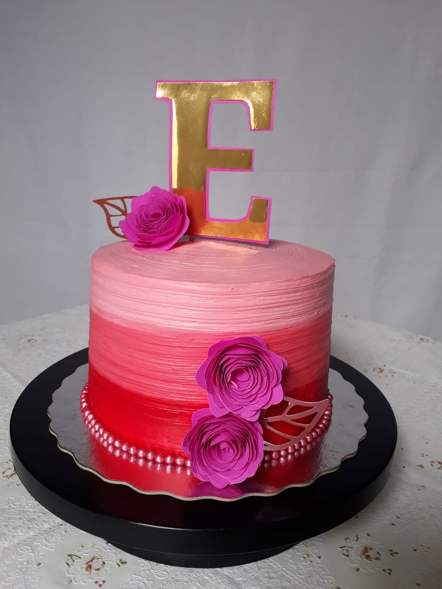

Contato
Qual é a origem do pudim? Apesar de ser uma sobremesa bastante tradicional nos lares brasileiros, os indícios apontam que o pudim nasceu em Portugal.

Qual a composição do pudim? O tipo mais novo de pudim pode ser tanto um prato de sobremesa como pode ser consumido sem ser um acompanhamento. O preparo habitual faz com que o açúcar e outros ingredientes sejam solidificados por meio de algum agente estrutural gelificante como amido de milho, gelatina, ovos, tapioca e outras féculas.
Como chama a decoração de bolo? Você já deve ter visto aquela pequena e fofa decoração no topo do bolo que complementa o cenário da festa, não é mesmo? O topper de bolo é grande tendência e praticamente indispensável na hora de compor a mesa de um aniversário. Além de conceder mais charme, o item é prático de fazer e, o melhor de tudo, bem econômico!
Instagram: @docelirio.oficial
Telefone: (85) 9.9869-7236